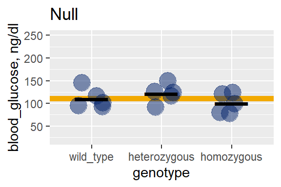

Chapter 22 The t-tests
The t-tests, otherwise known as “Student’s t tests”, are for experimental designs that test hypotheses comparing one group to a standard or two groups two each other, or paired measures within replicates and where the outcome variable is continuous and on an equal interval scale.
In other words, t-tests are for dependent variables involving measured data and when two or fewer levels of an independent variable are tested.
To recall, continuous data are on scales that have values between their intervals. For example, we might use a mass balance to measure the mass of individual mice, and then record how their weight change in response to some factor at two different levels. Here, mass would be an equal interval measurement. Mass is continuous, in so far as a theoretically infinite number of values can exist between two units on the scale, depending upon the sensitivity of the measurements.
Derivative continuous variables are common in t-testing. For example, growth rate, in grams/week, is a derivative of the mass and time measurement scales. Like mass and time, growth rate is also continuous.
Just as importantly, the statistics derived from continuous, equal interval data also have the properties of continuous, equal interval data. For example, the means and standard deviations, the standard errors of the mean, and the t-test statistic itself are also scaled continuous.
22.1 Data assumptions for t-tests
The following assumptions should be checked to use t-tests properly.
22.1.0.1 Strong assumptions, t tests are invalid if these not met:
The replicate data arise from a randomized process.
Each sample replicate is independent of every other sample replicate.
Don’t confuse a measurement with a replicate. Paired designs have two measurements from one replicate. For example, a measurement after placebo and then a second measurement after drug.
22.1.0.2 Weak assumptions: t-tests are less robust when these are not met:
The sampled population for each group is normally distributed.
The variances of the compared groups are equivalent.
We are now at the simplest application of the linear model. Wherein one \(x_1\), or more commonly two \(x_1,x_2\) levels of the independent variable \(X\) predicts the response of the dependent variable \(Y\) as \[E(Y) = \beta_0 +\beta_1X+e\]
The focus of t-testing is to estimate for the value of \(\beta_1\) and ask whether it differs statistically from zero. When \(\beta_1=0\), a line drawn between the pair of points \(x_1,y_1\) and \(x_2, y_2\) has a slope of zero. \(X\) has no effect on \(Y\) and thus \(E(Y)\) equals the value of the intercept, \(Y = \beta_0\). Think of the intercept as the background or basal level the dependent variable.
Gauss discovered that a property of continuous data when measurements are taken from the linear range on its scale is that residual error \(e\) is normally distributed.
The smaller the sample size, the more difficult it is to assess the distribution of \(e\). Thus, it is hard to validate the latter two assumptions above.
There are two equally valid ways to approach this.
Normality tests such as the Shapiro-Wilk (shapiro.test), tests the null hypothesis that the values of a random variable are normally-distributed. Levene’s test library(car), leveneTest is useful to test the homogeneity of variance assumption. The use of these tests should be declared in advance in the design phase. Unless you’re dealing with sample sizes of ~30 or greater, it is probably futile to try to make these assessments.
If their nulls are rejected, the data can be normalized through log or reciprocal transformation. The t-tests are then performed on these transformed values. Alternately, nonparametric analysis with the Wilcoxon tests can be used instead.@(nonparametrics) Again, these decisions should be declared in advance.
The performance of t-tests and their nonparametric counterparts are virtually identical when the normality and homoscedasticity assumptions are met. Whereas nonparametrics statistics can be more powerful when these assumptions are unmet.
Figure 22.1: Comparison of Wilcoxon test power to t-tests when sampling from skewed (lognormal) and normal distributions.
22.2 The t Statistic
The \(t\) statistic is a ratio signifying the signal to noise ratio in a sample.
The numerator would be a measure for the magnitude of the average effect, whereas the denominator would represent the precision by which those mean differences are determined. There are 3 different ways to calculate the numerators and denominators of \(t\), which correspond to three very different experimental designs.
The decision to use one or the other t-test is entirely scientific and based upon how the experiment is conducted. If you understand your experimental design, you’ll know which t test is applicable.
One sample tests inspect the difference between a sample mean and a hypothetical mean. Unpaired tests inspect the difference between the means of two groups. *The paired t test inspects the mean of the differences between paired observations.
The most common mistake made by statistically naive researchers is running unpaired t-tests on experiments that have a paired design.
22.2.1 One sample t tests
For comparing the mean response \(\bar y\) to a single level of a predictor variable against a hypothetical population mean, \(\mu\). A group comprised of \(n\) independent observations, whose \(\bar y\) The one sample t test has \(n-1\) degrees of freedom.
\[t=\frac{\bar y-\mu}{\frac{sd}{\sqrt n}}\]
22.2.1.1 Example
For example, normal blood glucose in mice is 100 mg/dl. Blood glucose is measured in a random sample of mice with a disrupted insulin receptor gene. A one-sample t-test compares their measured glucose values to the \(\mu\)=100 mg/dl.
22.2.2 Unpaired t tests
This test is used for experiments in which the measurements are all independent from each other.
22.2.2.1 Student’s t-test
The unpaired Student’s t-test compares the difference between the mean responses to each of two levels, A and B, of a predictor variable. The design is comprised of a total of \(n_A + n_B\) observations. A degree of freedom is lost for each of the two calculated group means. \(s_p\) would be the pooled standard deviation of the sample. \(s^2_p\) is the pooled variance of the sample.
\[t=\frac{\bar y_A-\bar y_B}{\sqrt{\frac{s^2_p}{n_A}+\frac{s^2_p}{n_B}}}\]
The pooled variance is calculated using the sum of the squared deviates \(SS_A\ and\ SS_B\) from each group as follows: \[s^2_p=\frac{SS_A+SS_B}{df_A+df_B}\], where \(df_A=n_A-1\) and \(df_B=n_B-1\).
The null sampling distribution for \(t\) has \((n_A + n_B)-2\) degrees of freedom.
The denominator of the \(t\) ratio is the standard error of the test. The standard error represents the test’s precision but note how it represents the standard error of two means.
Inspection of the pooled variance equation and how it factors into the calculation of the test statistic should give you some indication for how unequal sample sizes or variance between groups can be problematic. When unbalanced the calculation can be biased to one of the groups.
22.2.2.2 Welch’s t-test
Welch’s t-test, which is the default in R for comparing group means, differs from Student’s t-test. First, Welch does not use a pooled variance term.
\[t=\frac{\bar y_A-\bar y_B}{\sqrt{\frac{s^2_A}{n_A}+\frac{s^2_B}{n_B}}}\]
Second, the degrees of freedom \(\nu\) for the null \(t\) distribution of the test is calculated differently: \[\nu=\frac{(\frac{s^2_A}{n_A}+\frac{s^2_B}{n_B})^2}{\frac{s^4_A}{n^2_A\nu_A}+\frac{s^4_B}{n^2_b\nu_B}}\]
It is important to note that in R’s t.test function the default option var.equal=F calls for Welch’s test. When set to TRUE, it runs the Two Sample t-test.
Under some conditions, the two tests can yield quite different values for \(t\) and \(p-values\) when fed the same data. The Welch t-test is held to perform better under a variety of sampling conditions, but such generalities are about as useful as reading these words costs you. YMMV.
When conducting power analysis during the experimental design phase, particularly when planning unequal sample sizes or for unequal variances, it is useful to compare how the two tests perform given your expected experiment. It is important to know how these tests perform when evaluating your own variables. And it is easy enough to run the simulation.
22.2.2.3 Example
A mouse model of diabetes has been established. It is used to test whether novel blood glucose lowering drugs work. A sample of mice are randomly assigned to treatment with either a placebo or with a drug. Blood glucose measurements are taken from all mice, and the two groups are compared. Every measurement stands as an independent replicate.
22.2.3 Paired t tests
This test is used when measurements are intrinsically-linked. Each of \(n\) replicates is exposed to both levels, A and B, of a predictor variable. There are \(n\) pairs of measurements in the design. The mean difference \(\bar d\) of the paired responses is compared to the value of zero. \(sd_d\) is the standard deviation of the \(n\) differences. The experiment has \(n-1\) degrees of freedom, because only the mean of the differences is taken.
\[t=\frac{\bar d}{\frac{sd_d}{\sqrt n}}\]
22.2.3.1 Example
A random sample of a group of diabetic mice is selected from a colony. For each mouse a blood sample is drawn after administration of a placebo in which glucose is measured. Each mouse is next administered a drug. Within hours, a second blood sample is drawn, in which glucose is measured again. The drug effect is calculated as the difference between the glucose measurements after placebo and drug. Each pair of measurements stands as an independent replicate.
22.3 t Test Hypotheses
As for whether to choose a paired or unpaired analysis, the choice of t-test hypotheses depends upon the experimental design and the scientific question at hand. In R, the hypothesis via options in the alternative argument of the t.test function.
Since t-tests are parametric, hypotheses are stated on the basis of the statistical parameters of the sampled population. In this case, the means of the samples are meant to infer the sampled population, so we revert to Greek notation.
To put this another way, that the sample shows a difference is a mathematical fact. We don’t need a statistical test to tell us that. The test helps us infer whether the populations that were sampled differ.
One-sided hypotheses predict the direction of an effect. For example, “the response to treatment will be greater than control.” Or, “the response to treatment will be less than control.”
Two-sided hypothesis do not predict the direction of an effect: “The response to treatment will differ from control, either higher or lower.” Therefore, use a one-sided hypothesis if you think your treatment will go in a specific direction. Choose a two-sided test when you’re not willing to bet on an effect’s direction.
This matters because at the 95% confidence level the threshold value of the t statistic will be lower for a one-sided test ( eg,qt(0.05, 2) than for a two-sided test (qt(0.025, 2)) given the same data. Put another way, the “significance” threshold will always be a higher bar to cross for a two-sided hypothesis. For a one-sided test, all of the 5% cumulative probability is on one side of the distribution. For a two-sided test, that 5% is evenly split to both sides.
Therefore, two-sided tests are slightly more stringent. There is a school of thought that all testing should be two-sided. One reason for this is the enhanced stringency. Another is that 95% confidence intervals of the estimate are more readily interpretable as they have both upper and lower bounds. A third reason is that if testing one-sided and the effect goes extreme but in the direction opposite of predicted, the null cannot be rejected formally. The experiment will need to be repeated.
22.3.1 One sample hypotheses
Two sided: Use when, going into an experiment, you are not sure which direction the predictor variable will change the outcome variable relative to the population mean.
H_0: \(\bar x = \mu\) H_1: \(\bar \ne \mu\)
One sided: Use when, going into an experiment, you are confident the predictor variable will cause the outcome response to be higher than the population mean.
H_0: \(\bar x \le \mu\) H_1: \(\bar x>\mu\)
Or you are confident the predictor variable will cause the outcome response to be lower than the population mean.
H_0: \(\bar x \ge \mu\) H_1: \(\bar x<\mu\)
22.3.2 Unpaired hypotheses
Two sided: Use when, going into an experiment, you are not sure whether level A or B of the predictor will cause a higher outcome response.
H_0: \(\bar x_A = \bar x_B\) H_1: \(\bar x_A \ne \bar x_B\)
One sided: Use when, going into an experiment, you are confident level A of the predictor variable will cause the outcome response to be higher than that for level B.
H_0: \(\bar x_A \le \bar x_B\) H_1: \(\bar x_A > \bar x_B\)
Or when you are confident the level A of the predictor variable will cause the outcome response to be lower than that for level B.
H_0: \(\bar x_A \ge \bar x_B\) H_1: \(\bar x_A < \bar x_B\)
22.3.3 Paired hypotheses
Two sided: Use when, going into an experiment, you are not sure whether the mean difference between levels of the predictor variable will be less than or greater than zero.
H_0: \(\bar x = 0\) H_1: \(\bar x \ne 0\)
One sided: Use when, going into an experiment, you are confident the mean difference between levels of the predictor will be greater than zero.
H_0: \(\bar x \le 0\) H_1: \(\bar x>0\)
Or when, going into an experiment, you are confident the mean difference between levels of the predictor will be less than zero.
H_0: \(\bar x \ge 0\) H_1: \(\bar x<0\)
22.4 Confidence Intervals of Means
A 95% confidence interval is an inferential statistic that allows for estimating the accuracy of a sample. The 95% CI is the range of values within which there is 95% confidence the true mean rests.
A two-sided 95% CI can be calculated as follows: \[mean\pm qt(0.975, df)*\frac{sd}{\sqrt n}\]
For example, given a sample size of n=3, that has a mean of 100. and a standard deviation of 25
upper.limit <- 100+qt(0.975, 2)*(25/sqrt(3))
lower.limit <- 100-qt(0.975, 2)*(25/sqrt(3))
upper.limit## [1] 162.1034## [1] 37.89656Thus, the point estimate for the mean is 100 and, on the basis of this single sample, we can assert 95% confidence the true population mean is somewhere between 37.89 and 162.10.
Another way to think about this is in frequentist terms. If we sampled 100 times, where each sample has n independent replicates, 95% of the resulting confidence intervals would include our point estimate of 100.
I like to think that the standard error of the mean, \(SEM\), or \(\frac{sd}{\sqrt n}\), provides information about the precision of the mean estimate. As the sample size increases \(SEM\) lowers.
I like to think about the 95% confidence interval as providing information about the accuracy of the mean; the range of values the true mean might be based upon this one sample. Of course, when sampling from unknown hypothetical populations it’s never possible to know if something is accurate with perfect certainty. However, it is useful from time to time assert how confident we are in an estimate in terms of the values it might otherwise taken on.
As we muddle our way through the so-called replication crisis there is growing recognition that data summaries should focus more on confidence intervals and less on point estimates.
For example, one can readily imagine scenarios where the point estimate for a dependent variable of 100 is scientifically meaningful, but a point estimate of 37 is note. When the confidence interval includes values that are not scientifically impressive, the point estimate of 100 requires greater skepticism. The sample could very well be a high outlier.
22.5 Parameters, small samples, and reliability
A great deal of biomedical research revolves around experiments based upon small samples. A lot of this boils down to assessing the effects of independent variables by comparing two groups. The t-tests are easily the most frequently used test in biostatistics, whether used appropriately on measured variables, or inappropriately on sorted or ordered variables.
The t-tests are based upon the sample parameters \(\bar y, n, sd, \& sem=\frac{sd}{\sqrt n}\) that are worth understanding intuitively.
The figure below illustrates the outcome of repeatedly sampling the known population \(N(\mu=100, \sigma=25)\). The coefficient of variation for this simulation is \(cv=\frac{\sigma}{\mu}=0.25\), which my sense says is pretty typical for bio-variable with a well behaved signal to noise ratio. But YMMV.
At first, this script samples at size \(n=2\), repeating the sampling many times. Each time it calculates the sample \(\bar y\), \(sd\), and \(SEM\). Then it moves up to a sample size of \(n=3\), collecting these parameter values from each sample. And so on and so on up to a sample size of \(n=100\)
# a function to calculate parameter values for each sample drawn.
sampler <- function(n) {
samp <- rnorm(n, 100, 25)
msamp <- mean(samp)
sdsamp <- sd(samp)
sesamp <- sdsamp/sqrt(n)
tibble(n, msamp, sdsamp, sesamp)
}
# apply sampler to a column of n's, by row
sampsize <- tibble(n=2:100)
test <- bind_rows(apply(sampsize, 1, sampler))
# repeat 50X per n, the parameters in a list of lists
outputs <- list()
for (i in 1:50) {
output <- bind_rows(apply(sampsize, 1, sampler))
outputs[[i]] <- output
}
# tidyverse magic, converts list of lists to data frame
outputs <- bind_rows(outputs)
# plot it!
ggplot(outputs)+
geom_point(aes(n, msamp), color="blue")+
geom_point(aes(n, sdsamp), color ="red")+
geom_point(aes(n, sesamp), color="black")+
ylab("parameter value")+
annotate(geom="text",
x=c(75,75, 75),
y=c(125,40, 12),
label=c("mean","sd", "sem"),
color=c("blue", "red", "black"),
size=8
)+
theme_bw()Figure 22.2: Simulation of the relationships between the sample parameters used in t-tests. These can represent either group parameters or the parameters for the difference between groups.
What strikes you about this result?
The biggest thing it tells me is that small samples are crappy.
We know the mean and standard deviation are 100 and 25, respectively. We coded them to be exactly that. Yet, at low sample sizes, \(n\), their estimates from the samples can be pretty far off. And these vary quite a lot, too. By random chance, a sample mean and standard deviation can range anywhere from perfect to awful crappy estimates of the population values. And we’d never know which one we got.
The researcher is not at fault for this. This crappiness is inherent to the sampled population. This happens even with exquisite technique and perfectly calibrated pipettes and other instrumentation. Biological systems have variance. And when we do an experimental something to those systems we tend to provoke even more variance.
When do small samples get less crappy? In some respects that is in the eye of the beholder. To my eye, for this case \(n >30\) seems less crappy than under 30.
Importantly, the coefficient of variation will have a big role in this. Small samples of variables with low \(cv\) will be less crappy, relatively speaking. And the larger the effect size the greater latitude we have in tolerating crappy small samples, irrespective of their \(cv\).
This is where power calculations come in very handy. They are designed to tell us how low our sample size can be before we become victims of the crap.
The second thing this illustrator tells me is that \(sd\) and \(sem\) are not telling me the same thing. The sample \(sd\) reports dispersion in the sample, but that is also an estimate of \(\sigma\), the dispersion in the population.
Whereas the \(sem\) gets lower and lower as sample size increases, because \(sem=\frac{sd}{\sqrt n}\). Theoretically, \(sem\) approaches zero.
The \(sem\) is actually the standard deviation of the theoretical population of sample means, a concept which is derived from the central limit theorem. As a result, we infer from the \(sem\) of a single sample how precisely that sample estimates of population mean. As you can see from this illustrator, the precision by which a mean is estimated improves as sample size increases. Whereas \(sd\) oscillates with each sample around a fixed value, reflective of the dispersion of values in the population, \(sem\) gets better and better (when one assumes low is better).
22.5.1 Reporting SD or SEM?
Are you estimating the value of a physical constant, such as the mass of a boson, the \(K_D\) of a drug receptor interaction, the \(K_M\) of an enzyme? Something that should have the same value no matter where in the universe it is estimated? Researchers who are in the business of estimating those values with high precision, such as when those values are under dispute, cannot be faulted for reporting the \(sem\). Particularly when the goal of the experiment was to get a better estimate of the physical constant or how a variable changes it.
For everything else just report the SD.
Another consequence of the so-called replication crisis is that journals are requiring authors to show all their data more openly. Use scatter plots to show all data points rather than bar graphs with error bars. With respect to the latter, most people who are honest about why they use SEM error in bar graphs will admit because it makes the data look better. Since the motivation is basically deception, that is not a good reason to use SEM.
If you do use SEM in bar graphs, then you must report the exact value of \(n\) for each group so a reader can back calculate out the SD. Which gets messy in both figure legends and in graphs.
So just report the SD.
22.6 t Tests: Running the analysis
In R t.test represents a single function by which each of the three t test experimental designs can be analyzed.
22.6.1 One sample t test
Let’s say a standard to measure against is the value of 100. We can ask if a random sample that is 2-fold greater is different than 100, less than 100, or greater than 100:
# this makes the sample reproducible
set.seed(1234)
# here's a random sample
a <- rnorm(3, mean=200, sd=25)
# you can run t.test without naming it as an object
one2 <- t.test(a, mu=100, alternative="two.sided", conf.level=0.95 )
oneL <-t.test(a, mu=100, alternative="less", conf.level=0.95)
oneG <- t.test(a, mu=100, alternative ="greater", conf.level=0.95)
# the following line makes jabstb more readable
# broom::tidy is a function to clean up R test output
# not a bad trick to have for functions or writing clean reports
knitr::kable(bind_rows(tidy(one2), tidy(oneL), tidy(oneG)), caption="One-sample t-test output. Read text for interpretation.") | estimate | statistic | p.value | parameter | conf.low | conf.high | method | alternative |
|---|---|---|---|---|---|---|---|
| 201.29 | 6.037536 | 0.0263538 | 2 | 129.1056 | 273.4744 | One Sample t-test | two.sided |
| 201.29 | 6.037536 | 0.9868231 | 2 | -Inf | 250.2778 | One Sample t-test | less |
| 201.29 | 6.037536 | 0.0131769 | 2 | 152.3023 | Inf | One Sample t-test | greater |
22.6.1.1 Interpretation
\(t\) is a descriptive statistic, calculated from the sample values as described above. The test uses ordinary least squares. See the chapter on dispersion.
Notice how the t-value is the same for all 3 tests. The same sample will give the same signal to noise ratio, irrespective of the hypothesis tested.
You may be disappointed by no output for the \(sd\) or \(sem\) of the sample. But these are easy enough to calculate. From the equation as described above: \(sem=\frac{\bar y}{t}\), and \(sd=sem \times \sqrt n\)
Parameter is value for the degrees of freedom. This sample with \(n=3\) has \(df=2\). A degree of freedom was lost in calculating \(\bar y\)
The p-value is a cumulative probability from a null \(t_{df=2}\) distribution. It is the probability of the observed value for \(t\) or a value more extreme, if the null hypothesis is true.
The p-values do differ between the 3 tests because the hypotheses differ, and these hypotheses affect the calculation of \(p\) even though \(t\) is the same for each test.
The one-sided
lesshypothesis argument predicts the sample mean will be less than \(\mu\). Its p-value calculation ispt(q=6.037536, df=2, lower.tail=T). It is large because it is the wrong hypothesis for these data. If the sign of the \(t\) were negative, this would be the correct hypothesis.
The one-sided greater hypothesis greater predicts the sample mean will be greater than \(\mu\). Its p-value calculation is pt(q=6.037536, df=2, lower.tail=F).
The
two.sidedhypothesis is the sample mean does not equal \(\mu\). Its p-value ispt(t=6.037536, df=2, lower.tail=T)/2The 95% confidence level is the default. If you want a different confidence level, for example, an 86.75309% CI, simply enter an argument for it.
The upper and lower confidence limits differ between the 3 tests. The one-sided tests give you an infinite limit on one side. These are hard to interpret and not particularly useful. If you are tempted to to combine the upper of less with the lower of greater, you’ve created a 90% confidence interval, so don’t.
The simplest way to get a “typical” 95% CI in R that has both upper and lower limits is to run a two.sided t.test and pull it out of that.
There is no Welch’s test for one-sample measurements.
22.6.2 Unpaired t test
Now we will pull two random samples: one from a normal distribution that has a mean of 200, and the second from a distribution that has a mean of 100. Both have standard deviations of 25. We have the option to run three different hypotheses.
set.seed(1234)
a <- rnorm(3, mean=200, sd=25)
b <- rnorm(3, mean=100, sd=25)
up2 <- t.test(a, b, alternative="two.sided", var.equal = F )
upL <- t.test(a, b, alternative="less", var.equal = F)
upG <- t.test(a,b, alternative ="greater", var.equal = F)
knitr::kable(bind_rows(tidy(up2), tidy(upL), tidy(upG)), caption="Unpaired t-test output. See text for interpretation. See interpretation of one-sample tests for details omitted here common to all tests.") | estimate | estimate1 | estimate2 | statistic | p.value | parameter | conf.low | conf.high | method | alternative |
|---|---|---|---|---|---|---|---|---|---|
| 113.0443 | 201.29 | 88.24569 | 3.920543 | 0.0208179 | 3.622275 | 29.58648 | 196.5022 | Welch Two Sample t-test | two.sided |
| 113.0443 | 201.29 | 88.24569 | 3.920543 | 0.9895910 | 3.622275 | -Inf | 176.4025 | Welch Two Sample t-test | less |
| 113.0443 | 201.29 | 88.24569 | 3.920543 | 0.0104090 | 3.622275 | 49.68623 | Inf | Welch Two Sample t-test | greater |
22.6.2.1 Interpretation
The interpretation is is similar to the one sample case but there are some evident differences.
The estimate is the difference between the means of each group.
Estimate1 and estimate2 are the means of each group.
Statistic is the value of \(t\), in this example calculated by the Welch method
Parameter is the value for \(df\),in this example also calculated by the Welch method. These are almost always fractional, whereas degrees of freedom for the Student’s t-test is always an integer value.
Although you can calculate the standard error for the test, \(se = \frac{estimate}{statistic}\), because there are two means, note how this value is not a standard error of the mean. In fact, each group will have different \(sem\) values. Best use R to calculate:
sem <- sd(a)/sqrt(length(a))The “mean of x” corresponds to the
asample, or the first group in the argument. In the unpaired t test, good practice is to put the ‘treatment’ as the first data argument, and the ‘control’ as the second argument.That will make interpretation of one-sided test output a LOT easier.
Welch’s test is only for unpaired tests, because it serves as an adjustment for when the sample sizes and variances of the two groups differ. The one-sample doesn’t have two groups, whereas the group variances are irrelevant in the paired t-tests.
22.6.3 Paired t Test
The paired test calculates the differences between paired measurements. Then it asks how the mean of these differences differs from zero.
In fact, although two groups are involved, the test calculates the mean its standard error of a third group: the values for the differences. Thus it is much more like the one-sample t-test than it is like the unpaired t-test.
The structure of the data input matters. If entered as two vectors (like below), the first value of the first vector will be paired with the first value of the second vector, and so on. Alternately, like all t-tests, you can run it using the formula method.
set.seed(1234)
a <- rnorm(3, mean=200, sd=25)
b <- rnorm(3, mean=100, sd=25)
p2 <- t.test(a, b, alternative="two.sided", paired=T)
pL <- t.test(a, b, alternative="less", paired=T)
pG <- t.test(a, b, alternative ="greater", paired=T)
#make a data frame suitable for the formula argument
long <- tibble(replicate=1:3, a, b) %>%
pivot_longer(-replicate,
names_to="group",
values_to="response")
#running the formula argument
l2 <- t.test(response ~ group, data=long, alternative="two.sided", paired=T)
knitr::kable(bind_rows(tidy(l2), tidy(p2), tidy(pL), tidy(pG)), caption="Paired t-test output. See text for interpretation. See interpretation of one-sample tests for details omitted here common in all tests.")| estimate | statistic | p.value | parameter | conf.low | conf.high | method | alternative |
|---|---|---|---|---|---|---|---|
| 113.0443 | 12.10457 | 0.0067559 | 2 | 72.86194 | 153.2268 | Paired t-test | two.sided |
| 113.0443 | 12.10457 | 0.0067559 | 2 | 72.86194 | 153.2268 | Paired t-test | two.sided |
| 113.0443 | 12.10457 | 0.9966221 | 2 | -Inf | 140.3140 | Paired t-test | less |
| 113.0443 | 12.10457 | 0.0033779 | 2 | 85.77465 | Inf | Paired t-test | greater |
22.6.3.1 Interpretation
The first row of the output is from the formula test. It should have the same everything as the second row.
The estimate is the mean of the differences between pairs. Group means are irrelevant. What matters in a paired t-test is whether the differences are reliably different from zero.
Notice how, given the same data, the paired computes a higher value for \(t\) compared to the unpaired.
\(t\) is the ratio of the mean of the differences divided by the standard error of the mean of the differences.
Notice how, given the same data, the paired test computes a lower p-value compared to the unpaired.
The 95% CI is for the mean of the differences. There is 95% confidence the true mean of the differences in the population sampled is included within the range bounded by conf.low and conf.high.
The parameter is the degrees of freedom. In this sample \(df=2\) because there are 3 pairs. A degree of freedom was lost by calculating the mean of the differences.
The paired test has the same number of measurements as the unpaired test, but fewer independent replicates. This is due to the experimental design, which called for paired measurements from each replicate. Which is based entirely upon scientific judgment.
There is no Welch’s test for paired measurements.
Good statistical judgment is not conflating the paired and unpaired tests, or assuming they differ trivially. They differ dramatically.
22.7 Plotting t Tests
Plot t-tests in a way that illustrates the experimental design.
22.7.1 Unpaired
An unpaired t-test compares two means. So the plot should show two means, and perhaps some summary statistics along with it.
Tidy the data, which makes it simple to create a descriptive statistics summary table:
#data munge
data.u <- data.frame(replicate=1:6, control=b, treatment=a) %>%
pivot_longer(cols=c(control, treatment),
names_to="Predictor",
values_to="Response")
#summary statistics table to have
data.y <- data.u%>%
group_by(Predictor) %>%
summarise(
mean=mean(Response),
sd=sd(Response),
n=length(Response),
sem=mean(Response)/sqrt(n)
)
knitr::kable(data.y, caption="Summary statistics for a two group sample.")| Predictor | mean | sd | n | sem |
|---|---|---|---|---|
| control | 88.24569 | 36.32957 | 6 | 36.02615 |
| treatment | 201.29004 | 25.99038 | 6 | 82.17631 |
Unless there is a scientific reason to report precision (and there rarely is a good one) plot the data points with mean +/- standard deviation.
A straight forward ways to add error bars is by use of the stat_summary function:
ggplot(data.u, aes(Predictor, Response)) +
geom_jitter(width=0.15, size=4) +
stat_summary(fun.data = mean_sdl,
fun.args = list(mult=1),
geom="crossbar",
width=0.2,
color="red"
)Figure 22.3: More journals want small sample t-test data as scatter plots. Use stat_summary geoms to add error bars and use SD not SEM. The argument mult=1 coupled with mean_sdl draws +/- 1 SD
22.7.2 Paired
Paired t test data should always be plotted with point-to-point lines to illustrate the paired relationship of the measurements. In the paired design, each replicate is a pair of observations. The means of the two groups of observations are irrelevant.
The design tests for the difference the treatment causes within each pair, which the slope of the line illustrates. For example, a horizontal line connects a replicate would indicate no effect of the predictor variable!
Munge the data into a long data frame format. Adding an ID for each replicate is necessary for a grouping variable for the plot aesthetics.
data.w <- tibble(control=b, treatment=a, id=c("A", "B", "C")) %>%
pivot_longer(cols=c(control, treatment),
names_to="Predictor",
values_to="Response")
22.8 t Test Power
See Chapter 23 for Monte Carlo-based power calculations. You should find that a properly executed Monte Carlo will give you the same result as a t-test power function.
A power analysis should precede every planned experiment to decide upon an optimal sample size for a severe test of an hypothesis. The principle output of any power function is the sample size that would be necessary to conduct a well-powered experiment.
The pwr package in R has the pwr.t.test function. It is very simple to execute. This function requires that several decisions be made in advance.
First, it takes arguments for acceptable type1 error and for intended power. The standard for these in basic biomedical research is 5% and 80%, respectively, but you can use any level you deem appropriate. If you want to run at 86.75309% power, go for it.
Two other arguments are type, which is the experimental design, and alternative, which is the hypothesis.
Finally, there is the d argument, which is Cohen’s \(\delta\). This is less obvious, but very important and simple to understand. Cohen’s \(\delta\) is the signal to noise for the effect size you anticipate.
I strongly recommend against defaulting Cohen’s values for “large”, “medium” and “small” effects, which apply to common standards in psychological research. They are much too ambiguous to be useful.
Imagine you anticipate measurements that will have a standard deviation of 25 units. You know this because of familiarity with the assay. You estimate this value on the basis of your own preliminary data or on published information. It takes scientific judgment to settle on that value.
You also believe the average response to a negative control or basal level of the predictor variable will be around 50 units. In your mind, a minimally scientifically valid treatment effect will have a 100 unit response, or 2-fold above the negative control.
The signal will be 100-50=50, and the noise will be 25. Cohen’s \(\delta\) will therefore be 50/25=2.
A power calculation for a one-sided hypothesis is illustrated for a unpaired design:
##
## Two-sample t test power calculation
##
## n = 3.986998
## d = 2
## sig.level = 0.05
## power = 0.8
## alternative = greater
##
## NOTE: n is number in *each* group22.8.1 Interpretation
The experiment should have a total sample size total of at least 8, 4 in each of two groups.
Randomly allocate each of two levels of the predictor variable to 4 replicates each. Notice how this function produces a bizarre, fractional sample size. Obviously, there is no such critter as a partial replicate. So always round up.
People seem to have difficulty with Cohen’s delta. It’s nothing more complicated than a simple signal-to-noise estimate, just like is the t-statistic. You need some idea about what value to expect for a mean (whether its difference between means or mean of the differences). You need some idea of the standard deviation.
Don’t make the mistake of putting too fine of a point on Cohen’s delta. Scientific judgement is required to calculate the values to use to calculate Cohen’s delta. Use your best scientific guess for standard deviation and the response magnitude, and err on the conservative side.
When designing an experiment temper your hoped for effect size with a sense of what you consider to be a minimally scientifically relevant effect size. In some systems, 2-fold is huge, whereas in other systems (with a lot of variation) a 2-fold response is deemed insignificant.
I strongly caution against using Cohen’s delta values recommended for “small”, “medium”, and “large” effects. There’s a good chance his idea of large effects is a lot smaller probably closer to your idea of small effects.
22.9 Summary
- Use t-tests for factorial experiments involving measured dependent variables.
- Assumptions about normality and homoscedacticity are difficult to validate with small samples.
- Although people commonly use t-tests on data transformed from proportions to percents, or on ordered data, proportion and nonparametric tests can be better options.
- The t-test is actually 3 different types of t-tests, only one of which compares the means of two groups.
- Which t-test to use depends entirely on the experimental design and requires matching scientific judgment with statistical judgment.
- Plot your data based on the experimental design.
- Configuration of the test depends upon the statistical hypothesis.
- The t-test permeates statistical analyis of biomedical experiments, from simple stand alone experiments to posthoc testing testing of ANOVA and regression coefficients. For this reason, you are advised to embrace a spiritual relationship with the t-test.